Content-audit digitale toegankelijkheid van website lisa.nl
Samenvatting
Wij hebben de content op de website lisa.nl onderzocht tussen 1 en 12 juni 2026. Op dit moment is een deel van de succescriteria als voldoende beoordeeld. In dit rapport lees je welke punten nog verbetering behoeven en hoe deze kunnen worden aangepakt.
Gebruik dit rapport samen met de audit van de hoofdwebsite ipo.nl. De website van deze contentaudit is een technische kopie van ipo.nl. Een aantal technische problemen die niet op de hoofdwebsite voorkomen, staan wel in deze contentaudit beschreven.
Het logo bovenaan de pagina met de zichtbare tekst "Lisa" mist een tekstalternatief. De alternatieve tekst moet minimaal de zichtbare tekst bevatten. Daarnaast staat het logo binnen een link. Echter, omdat er binnen de link al de linktekst "Homepagina" aanwezig is, hoeft dit niet ook nog aan het tekstalternatief te worden toegevoegd. De toegankelijke naam van de link wordt dan "Lisa Homepagina". Dit is ook van belang voor spraakbediening, want hiervoor moet de zichtbare tekst van het logo terugkomen in de naam van de link.
User story
Ik bedien de website met spraakinvoer. Als ik de zichtbare tekst van het logo uitspreek om de link te activeren, dan gebeurt er niets. Ik verwacht dat ik elke link kan activeren door de tekst uit te spreken die ik zie.
Ik lees de website met een schermlezer. Als ik de pagina open, kan ik niet bepalen welke website ik bezoek omdat het logo geen tekstalternatief heeft. Ik verwacht dat het logo een tekstalternatief heeft waarin de naam van de organisatie staat.
Hoe te testen
Vergelijk voor elk element met een zichtbaar tekstlabel die tekst met de toegankelijke naam (via het accessibility-panel in DevTools of een schermlezer). De zichtbare tekst hoort aan het begin van de toegankelijke naam te staan. Test met spraakbesturing: "klik op Lisa".
Oplossing
Voeg een tekstalternatief toe aan de afbeelding van het logo met daarin minimaal de zichtbare tekst "Lisa". Het <span class="screen-reader-text">Homepagina</span>-element kan blijven staan; de toegankelijke naam van de link wordt dan "Lisa Homepagina".
Op deze pagina staat een kop "Ga direct naar" die niet voldoende beschrijft welke inhoud erop volgt. Koppen als "Ga direct naar", "Direct naar" en "Snel naar" zijn te algemeen en geven geen betekenisvolle informatie over het doel van de inhoud. Schermlezergebruikers vertrouwen op koppen om door de pagina te navigeren en de structuur ervan te begrijpen. Koppen moeten daarom helder, beknopt en passend bij het onderwerp van de volgende inhoud zijn.
User story
Ik lees de website met een schermlezer. Als ik via koppen door de pagina navigeer, geven labels als "Ga direct naar" geen bruikbare informatie. Ik verwacht dat elke kop duidelijk beschrijft welke inhoud erop volgt.
Hoe te testen
Maak een overzicht van alle koppen op de pagina, bijvoorbeeld met de Koppen checker of de HeadingsMap-extensie. Elke kop moet de inhoud die erop volgt zo duidelijk beschrijven dat je op basis daarvan een navigatiekeuze kunt maken. Vage koppen als "Ga naar" of "Meer info" helpen daar niet bij.
Oplossing
Vervang de vage kop door een omschrijvende kop die duidelijk aangeeft welk onderwerp de sectie behandelt.
Deze pagina bevat een formulier. Als het invoerveld "E-mailadres" wordt leeggelaten en op "Versturen" wordt geklikt, verschijnt de Engelstalige foutmelding "Please supply a valid email address", terwijl de rest van de website Nederlandstalig is. Foutmeldingen moeten in dezelfde taal staan als de primaire taal van de website.
User story
Ik lees de website met een schermlezer. Als ik op een foutmelding in een andere taal stuit, leest mijn schermlezer die met de verkeerde uitspraak voor en is hij moeilijk te begrijpen. Ik verwacht dat foutmeldingen in dezelfde taal staan als de rest van de pagina.
Hoe te testen
Verstuur het formulier met een ongeldige waarde en controleer of de foutmelding in dezelfde taal staat als de rest van de pagina. Bevestig dat er geen foutmeldingen in een andere taal worden getoond, tenzij die taalwijziging in de code is aangegeven met een lang-attribuut.
Oplossing
Vertaal de foutmelding naar het Nederlands. Lukt dat niet, voeg dan een lang-attribuut aan deze tekst toe, zodat de schermlezer het in het Engels voorleest.
#4 - Twee koppen van hetzelfde niveau direct achter elkaar
Impact: MediumType: ContentWCAG: 1.3.1EN: 9.1.3.1
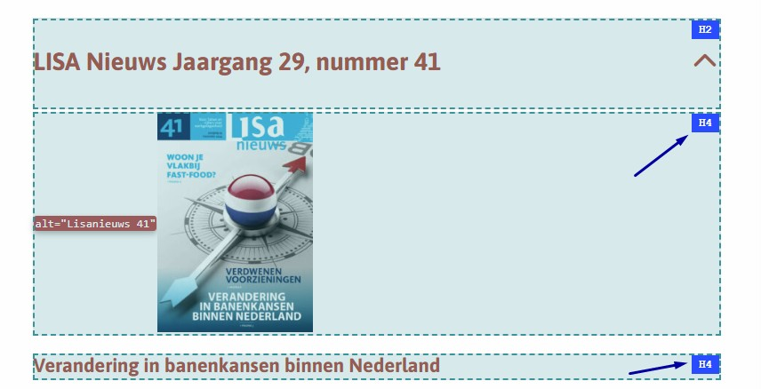
Op deze pagina wordt een kop van niveau 4 direct gevolgd door een andere kop van hetzelfde niveau. Zie "Lisanieuws 41" en "Verandering in banenkansen binnen Nederland", "Lisanieuws 32" en "Toegevoegde waarde toont economisch herstel", "Lisanieuws 31" en "Keerpunt in werkgelegenheid: kleine banengroei in 2014", en andere.
Dit duidt op een onjuiste kopstructuur. Koppen moeten een logische hiërarchie volgen. Een kop hoort niet direct gevolgd te worden door een andere kop van hetzelfde of hoger niveau zonder tussenliggende inhoud.
User story
Ik lees de website met een schermlezer. Als ik door koppen navigeer, kom ik twee koppen van hetzelfde niveau direct achter elkaar tegen zonder inhoud ertussen. Daardoor denk ik dat er inhoud ontbreekt. Ik verwacht dat elke kop het begin van een eigen sectie aangeeft.
Hoe te testen
Gebruik deze tool om de koppen op je webpagina te controleren: Koppen checker. Een h4 moet gevolgd worden door inhoud, een h5 of een h3, niet door nog een h4 zonder tussenliggende tekst.
Oplossing
Zorg dat de koppen op een passende manier genest zijn en de structuur van de inhoud weerspiegelen. Bijvoorbeeld: een h4 moet gevolgd worden door een h5 of h6, door tekst of een afbeelding met tekstalternatief, niet door nog een h4 of een h3. Los dit bij voorkeur op door hier de afbeelding niet als kop op te maken.
#5 - em-element gebruikt voor opmaak in plaats van betekenis
Impact: KleinType: ContentWCAG: 1.3.1EN: 9.1.3.1
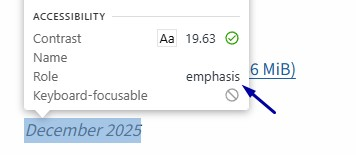
Op deze pagina wordt het em-element gebruikt om tekst visueel op te laten vallen, terwijl de inhoud zelf geen nadruk nodig heeft. Zie "December 2025", "December 2024", "December 2022" en andere.
Hetzelfde probleem komt voor op de pagina:
https://www.lisa.nl/tarieven/ — zie "Starttarief: bij complexe … uurtarief doorgerekend." en "Toegevoegde waarde en … variant (€ 0,09 totaal)"
Het em-element betekent "nadruk in spraak". Schermlezers veranderen vaak van toon bij dit element. Als het gebruikt wordt voor styling in plaats van betekenis, dan krijgen willekeurige woorden de nadruk en raakt de betekenis vertekend.
User story
Ik luister een pagina met een schermlezer. Ik wil dat alleen woorden die echt belangrijk zijn benadrukt worden. Anders krijgen willekeurige woorden de nadruk en raakt de betekenis vertekend.
Hoe te testen
Loop door de pagina met DevTools en een schermlezer en let op woorden die benadrukt voorgelezen worden. Controleer of die nadruk past bij de bedoeling van de tekst.
Oplossing
Gebruik strong en em alleen als een woord of zinsdeel echt belangrijk is, en door spraaksoftware benadrukt moet worden. Wil je tekst alleen visueel laten opvallen? Gebruik dan CSS, bijvoorbeeld met een eigen class-attribuut en font-weight: bold of font-style: italic.
#6 - Kop niet gemarkeerd als kop
Impact: MediumType: ContentWCAG: 1.3.1EN: 9.1.3.1
Op deze pagina is de tekst "Op deze pagina" in de code niet gemarkeerd als kop. Wanneer tekst als kop fungeert maar de bijbehorende mark-up mist, verliest de tekst zijn semantische betekenis en is hij niet toegankelijk voor bezoekers die hulpsoftware zoals schermlezers gebruiken. Koppen zijn essentieel om door de pagina te navigeren en de structuur van de inhoud te begrijpen.
Ik lees de website met een schermlezer. Als ik via koppen door een pagina navigeer, mis ik koppen die alleen visueel zijn opgemaakt. Ik verwacht dat alle zichtbare koppen ook door mijn schermlezer worden herkend als kop.
Hoe te testen
Gebruik deze tool om de koppen op je webpagina te controleren: Koppen checker. Staat een kop niet in de lijst die deze tool teruggeeft? Dan is het niet als koptekst gemarkeerd.
Oplossing
Markeer deze teksten met het juiste kop-element (h2 tot en met h6), zodat ze hun rol en plek in de hiërarchie van de inhoud weerspiegelen.
#7 - Pdf-icoon heeft geen tekstalternatief
Impact: MediumType: ContentWCAG: 1.1.1EN: 9.1.1.1
Op deze pagina staat een link met de tekst "Print" die een pdf-icoon bevat. Het icoon heeft geen tekstalternatief, waardoor schermlezergebruikers niet weten dat de link verwijst naar een "Print naar PDF"-functionaliteit. Deze informatie is belangrijk en moet op een toegankelijke manier worden aangeboden.
Als ik mijn schermlezer gebruik, krijg ik geen informatie van iconen zonder tekst. Ik wil dat het pdf-icoon wordt voorgelezen, anders weet ik niet dat de link naar een pdf leidt of er een opent.
Hoe te testen
Inspecteer elke afbeelding, elk icoon en elke SVG in DevTools. Informatieve elementen hebben een tekstalternatief nodig dat de betekenis overbrengt; decoratieve img-elementen gebruiken alt="" en decoratieve svg-elementen aria-hidden="true". Verifieer met een schermlezer dat er geen ruis (bijvoorbeeld de bestandsnaam of "image") wordt voorgelezen.
Oplossing
Voeg verborgen tekst toe binnen de link (bijvoorbeeld "(PDF)") die visueel niet zichtbaar is, maar wel beschikbaar is voor schermlezers. Zo weten gebruikers dat de link naar een "Print naar PDF"-functionaliteit verwijst.
Op deze pagina haalt de grijze (#969696) tekst "Bron: LISA 2021" niet de minimale contrastverhouding van 4,5:1 ten opzichte van de achtergrond. Voor normale tekst (kleiner dan 18 pt, of kleiner dan 14 pt vetgedrukt) geldt een minimale contrastverhouding van 4,5:1, zodat de tekst leesbaar blijft. Onvoldoende contrast maakt tekst moeilijk of onleesbaar voor bezoekers met slechtziendheid, kleurenblindheid of mensen die op een scherm in een lichte omgeving lezen.
User story
Ik ben slechtziend. Als ik een pagina lees, kan ik tekst met te weinig contrast met de achtergrond niet goed onderscheiden. Ik verwacht dat tekst altijd duidelijk afsteekt tegen zijn achtergrond.
Hoe te testen
Meet de contrastverhouding van de tekst met de achtergrond met de Colour Contrast Analyser.
Oplossing
Pas de tekstkleur of de achtergrondkleur aan zodat de contrastverhouding minimaal 4,5:1 is. Gebruik bijvoorbeeld de Colour Contrast Analyser om dit te controleren.
In de grafieken is het contrast tussen de blauwe (#383B68) en rode (#D35E54) staafdiagrammen en de legenda-items in "Figuur 2 — Aantal vestigingen en banen akker- en tuinbouw" met 2,9:1 te laag. Dit moet minimaal 3,0:1 zijn.
User story
Ik ben slechtziend. Als ik naar een grafiek kijk, kan ik onderdelen met te weinig contrast niet van elkaar onderscheiden. Ik verwacht dat de informatieve onderdelen van een grafiek voldoende contrast hebben.
Hoe te testen
Meet met de Colour Contrast Analyser het contrast tussen de informatieve onderdelen van de grafiek en aangrenzende kleuren. Het minimum is 3,0:1.
Oplossing
Zorg voor voldoende contrast tussen de staven en de legenda-items. In plaats van aanpassing van de kleur kan ook arcering worden gebruikt. Als er een alternatief aanwezig is voor de grafiek, bijvoorbeeld een tabel die dezelfde informatie overbrengt, hoeft de grafiek niet te voldoen aan de contrasteisen.
#10 - Contrast van grote tekst is lager dan 3,0:1
Impact: MediumType: ContentWCAG: 1.4.3EN: 9.1.4.3
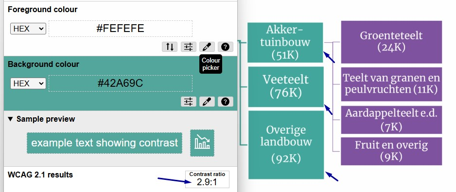
Op deze pagina heeft de grote tekst, bijvoorbeeld "Akker-tuinbouw", niet de minimale contrastverhouding van 3,0:1 met de achtergrond. Voor grote tekst (18 pt en groter, of 14 pt vetgedrukt en groter) geldt een minimale contrastverhouding van 3,0:1. Grote tekst is over het algemeen makkelijker te lezen, maar slechtziende bezoekers hebben nog steeds voldoende contrast nodig om hem te kunnen waarnemen.
User story
Ik ben slechtziend. Als ik grote tekst lees, kan ik die niet goed onderscheiden van de achtergrond. Ik verwacht dat grote tekst altijd genoeg contrast heeft om leesbaar te zijn.
Hoe te testen
Meet de contrastverhouding van de tekst met de achtergrond met de Colour Contrast Analyser.
Oplossing
Pas de tekstkleur of de achtergrondkleur aan zodat de contrastverhouding minimaal 3,0:1 is.
#11 - Afbeelding bevat ingebedde tekst
Impact: MediumType: ContentWCAG: 1.4.5EN: 9.1.4.5
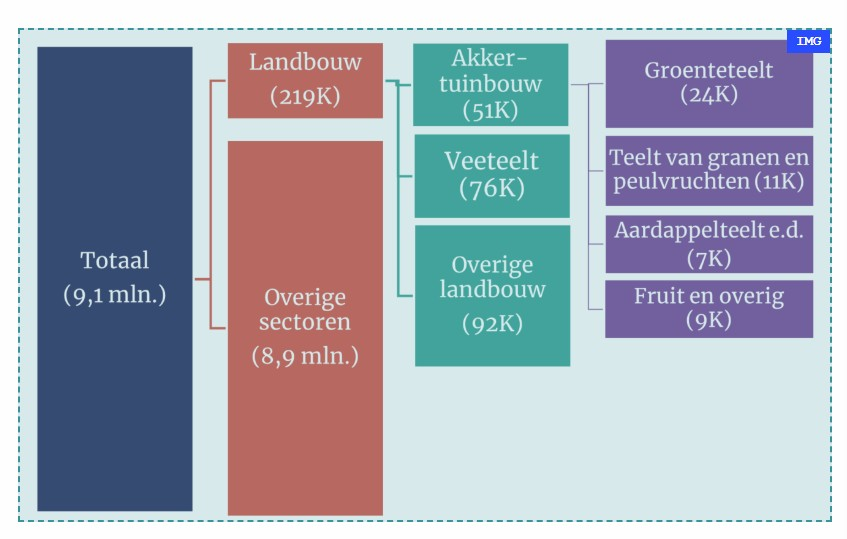
Op deze pagina staat onder "Figuur 1 — Werkgelegenheid akker- en tuinbouw in Nederland, per 1 april 2021" een afbeelding waarin tekst is ingebed. Tekst die in een afbeelding zit, is niet toegankelijk voor veel bezoekers. Ze kunnen de tekst niet vergroten of de presentatie ervan aanpassen (lettertype, kleur enzovoort) aan hun behoeften.
User story
Ik zoom in op 200% om de pagina te lezen. Als ik inzoom op een afbeelding met tekst, dan wordt de tekst wazig en onleesbaar. Ik verwacht dat alle tekst op de pagina echte tekst is die scherp blijft als ik inzoom.
Hoe te testen
Probeer alle tekst op de pagina te selecteren (Cmd/Ctrl + A). Als tekst niet selecteerbaar is, dan is het een afbeelding van tekst. Dat wordt afgekeurd onder dit succescriterium tenzij het om een logo, essentiële typografie of een foto gaat. Ook wordt het niet afgekeurd als er een toegankelijk alternatief geboden wordt.
Oplossing
Gebruik echte tekst in plaats van tekst ingebed in een afbeelding. Zo kunnen bezoekers de presentatie van de tekst zelf aanpassen.
#12 - Bijschrift is niet gekoppeld aan de afbeelding
Impact: MediumType: ContentWCAG: 1.3.1EN: 9.1.3.1
Op deze pagina staat een afbeelding met daarboven het bijschrift "Figuur 1 — Werkgelegenheid akker- en tuinbouw in Nederland, per 1 april 2021". Dit bijschrift is in de code niet gekoppeld aan de erbij horende afbeelding.
User story
Ik lees de website met een schermlezer. Als ik op een afbeelding kom, hoor ik niet welk bijschrift erbij hoort. Ik verwacht dat het bijschrift in de code aan de afbeelding is gekoppeld, zodat mijn schermlezer ze samen voorleest.
Hoe te testen
Inspecteer de afbeelding in de broncode en controleer of het bijschrift in de code aan de afbeelding is gekoppeld. Luister met een schermlezer om te controleren of bij de afbeelding het bijschrift vermeld wordt.
Oplossing
Plaats de afbeelding binnen een figure-element en plaats daarbinnen een figcaption-element waarin het bijschrift wordt opgenomen. De alt-tekst van de afbeelding mag dan leeg blijven: alt="".
#13 - iframe-element mist een title-attribuut
Impact: GrootType: TechniekWCAG: 4.1.2EN: 9.4.1.2
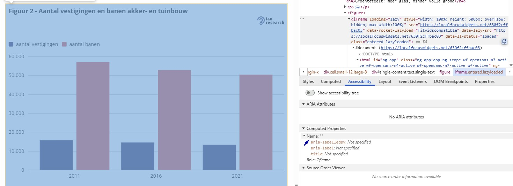
Op deze pagina staan iframe-elementen waarbij het title-attribuut ontbreekt. Schermlezers kunnen het doel van het iframe niet aankondigen. Daardoor weten gebruikers niet welke inhoud is ingesloten en of het de moeite waard is om erheen te navigeren.
User story
Ik lees de website met een schermlezer. Als ik een ingesloten element tegenkom, dan hoor ik geen beschrijving en kan ik niet bepalen wat erin staat. Ik verwacht dat mijn schermlezer een duidelijke naam aankondigt, zodat ik kan beslissen of ik dat element wil verkennen.
Hoe te testen
Inspecteer elk iframe in DevTools en controleer of het een title-attribuut heeft dat de inhoud beschrijft. Verifieer met een schermlezer dat de naam wordt aangekondigd.
Oplossing
Voeg een beschrijvend title-attribuut toe aan het iframe-element dat duidelijk aangeeft welke inhoud is ingesloten, bijvoorbeeld <iframe title="Grafiek …" src="…"></iframe>.
Op deze pagina staat een checkbox naast de tekst "Ik ga akkoord met de voorwaarden". Deze checkbox heeft geen toegankelijke naam. Hulpsoftware weet daardoor niet wat de functie van dit element is. Bovendien werkt spraakbesturing niet: voor spraakactivering moet de zichtbare tekst onderdeel zijn van de toegankelijke naam.
User story
Ik bedien de website met spraakinvoer. Als ik de zichtbare tekst van het label uitspreek om de checkbox aan te vinken, reageert hij niet. Ik verwacht dat de checkbox reageert op de tekst die ik ernaast zie staan.
Ik lees de website met een schermlezer. Als ik op deze checkbox kom, hoor ik niet wat er moet worden aangevinkt. Ik verwacht dat mijn schermlezer een duidelijke naam aankondigt.
Hoe te testen
Inspecteer de checkbox in DevTools en controleer of er een toegankelijke naam aanwezig is die overeenkomt met de zichtbare tekst "Ik ga akkoord met de voorwaarden". Test met spraakbesturing: "klik op Ik ga akkoord met de voorwaarden".
Oplossing
Koppel de zichtbare tekst aan de checkbox met een <label>-element via de for- en id-attributen. Zorg dat de toegankelijke naam de zichtbare tekst bevat en dat deze bij voorkeur aan het begin staat.
#15 - Contrast van grote tekst is lager dan 3,0:1
Impact: MediumType: ContentWCAG: 1.4.3EN: 9.1.4.3
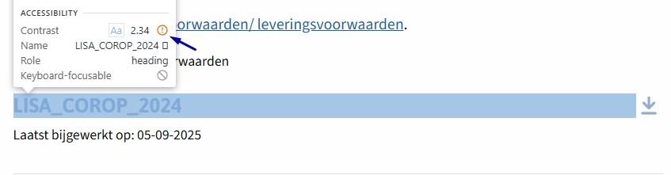
Op deze pagina halen grote teksten, bijvoorbeeld "LISA_COROP_2024", "LISA_Gemeenten_2024" en "LISA_Provincie_2024", niet de minimale contrastverhouding van 3,0:1 met de achtergrond. Grote tekst is over het algemeen makkelijker te lezen, maar slechtziende bezoekers hebben nog steeds voldoende contrast nodig om hem te kunnen waarnemen.
User story
Ik ben slechtziend. Ik verwacht dat grote tekst altijd genoeg contrast heeft om leesbaar te zijn.
Hoe te testen
Meet de contrastverhouding van de tekst met de achtergrond met de Colour Contrast Analyser. Voor normale tekst is het minimum 4,5:1, voor grote tekst (≥ 24 px normaal of ≥ 18,7 px vet) is het 3,0:1.
Oplossing
Pas de tekstkleur of de achtergrondkleur aan zodat de contrastverhouding minimaal 3,0:1 is.
#16 - Informatief icoon heeft geen tekstalternatief
Impact: GrootType: ContentWCAG: 1.1.1EN: 9.1.1.1
In de Power BI-presentatie "LISA_online_datamodule" staan informatieve logo-iconen die betekenis overbrengen aan ziende bezoekers, maar die geen tekstalternatief hebben. Schermlezergebruikers kunnen de informatie die deze iconen overbrengen niet waarnemen. Alle niet-decoratieve iconen moeten een tekstalternatief hebben dat dezelfde betekenis overbrengt als het visuele element.
User story
Ik lees de website met een schermlezer. Als ik op een informatief icoon kom, dan hoor ik niets. Ik verwacht dat mijn schermlezer beschrijft wat het icoon betekent.
Hoe te testen
Inspecteer elke afbeelding, elk icoon en elke SVG in DevTools. Informatieve iconen hebben een tekstalternatief nodig dat de betekenis overbrengt; decoratieve img-elementen gebruiken alt="" en decoratieve svg-elementen aria-hidden="true". Verifieer met een schermlezer dat er geen ruis (bijvoorbeeld de bestandsnaam of "image") wordt voorgelezen.
Oplossing
Voeg een tekstalternatief toe aan deze iconen, bijvoorbeeld via een aria-label, aria-labelledby of visueel verborgen tekst die de betekenis of functie beschrijft.
#17 - Tekstcontrast is lager dan 4,5:1
Impact: MediumType: ContentWCAG: 1.4.3EN: 9.1.4.3
In de Power BI-presentatie "LISA_online_datamodule" op pagina 3 halen de teksten "LISA-sector" en "All" niet de minimale contrastverhouding van 4,5:1 ten opzichte van de achtergrond. Zie ook andere pagina's in deze presentatie. Voor normale tekst (kleiner dan 18 pt, of kleiner dan 14 pt vetgedrukt) geldt een minimale contrastverhouding van 4,5:1, zodat de tekst leesbaar blijft.
User story
Ik ben slechtziend. Als ik een pagina lees, kan ik tekst met te weinig contrast met de achtergrond niet goed onderscheiden. Ik verwacht dat tekst altijd duidelijk afsteekt tegen zijn achtergrond.
Hoe te testen
Meet de contrastverhouding van de tekst met de achtergrond met de Colour Contrast Analyser.
Oplossing
Pas de tekstkleur of de achtergrondkleur aan zodat de contrastverhouding minimaal 4,5:1 is.
#18 - Power BI-visualisatie heeft geen tekstalternatief
Impact: GrootType: ContentWCAG: 1.1.1EN: 9.1.1.1
De Power BI-presentatie "LISA_online_datamodule" heeft geen tekstalternatief. Daardoor zijn blinde bezoekers uitgesloten van deze informatie. De meeste visualisaties bevatten wel een tabel die de informatie toegankelijker maakt, maar die tabel is niet direct zichtbaar als toegankelijk alternatief. Niet iedere bezoeker weet waar die te vinden is.
User story
Ik lees de website met een schermlezer. Als ik een datavisualisatie tegenkom, dan hoor ik geen beschrijving van de inhoud. Ik verwacht dat er een zichtbaar tekstalternatief of een downloadbaar bestand beschikbaar is.
Hoe te testen
Inspecteer de visualisatie en controleer of er een toegankelijk alternatief wordt aangeboden voor de informatie die de visualisatie overbrengt.
Oplossing
Voeg de uitgeschreven tekst van deze visualisatie toe aan de pagina. Dit kan ook in de vorm van een downloadbaar bestand.
#19 - Kleur wordt in de presentatie gebruikt om informatie over te brengen
Impact: GrootType: ContentWCAG: 1.4.1EN: 9.1.4.1
De Power BI-presentatie "LISA_online_datamodule" gebruikt op slide 6 kleur om informatie over te brengen. Deze informatie is niet toegankelijk voor mensen die kleuren niet of slecht kunnen onderscheiden.
User story
Ik kan kleuren niet goed onderscheiden. Als ik naar een grafiek kijk, kan ik de categorieën in de legenda niet uit elkaar houden. Ik verwacht dat elke categorie ook een patroon, vorm of label heeft.
Hoe te testen
Bekijk de pagina in grijswaarden (DevTools > Rendering > Emulate vision deficiencies). Overal waar kleur informatie overbrengt — verplichte velden, foutmeldingen, links in lopende tekst, grafieksegmenten — is een tweede signaal nodig: tekst, icoon, onderstreping of patroon.
Oplossing
Gebruik naast kleur altijd een tweede visueel signaal om informatie over te brengen. Voeg bijvoorbeeld patronen, vormen of labels toe aan de grafiek. Zorg dat de legenda niet alleen op kleur leunt. In Power BI of Tableau kunnen patronen of directe gegevenslabels worden toegevoegd aan datapunten.
In de grafiek halen de lichtblauwe (#9CE1FD) staven niet de vereiste contrastverhouding van 3,0:1 tegen de witte (#FEFEFE) achtergrond. Informatieve grafische objecten zoals diagrammen, grafieken, betekenisvolle iconen en infographic-elementen moeten genoeg contrast hebben, zodat slechtziende bezoekers de informatie kunnen waarnemen die ze overbrengen. Zonder genoeg contrast gaat essentiële visuele informatie verloren.
User story
Ik ben slechtziend. Als ik naar een grafiek of icoon kijk, kan ik de vormen en lijnen niet onderscheiden omdat ze te weinig contrast hebben. Ik verwacht dat grafische elementen duidelijk afsteken tegen hun achtergrond.
Hoe te testen
Meet het contrast van grafische objecten tegen hun achtergrond met de Colour Contrast Analyser.
Oplossing
Zorg dat de informatieve onderdelen van dit grafisch object een contrastverhouding van minimaal 3,0:1 hebben tegen aangrenzende kleuren. Pas vulkleuren of randkleuren aan, of voeg patronen toe als extra signaal.
#21 - Informatieve afbeelding zonder tekstalternatief
Impact: GrootType: ContentWCAG: 1.1.1EN: 9.1.1.1
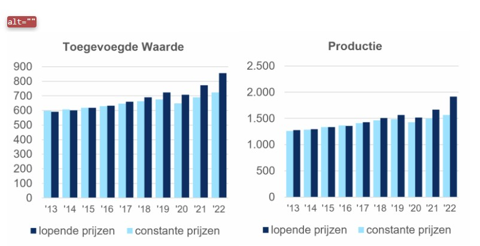
Op deze pagina staat een informatieve afbeelding (een grafiek met twee reeksen) die betekenis overbrengt aan ziende bezoekers, maar die geen tekstalternatief heeft. Schermlezergebruikers kunnen de informatie die deze afbeelding overbrengt niet waarnemen. Alle niet-decoratieve afbeeldingen moeten een tekstalternatief hebben dat dezelfde betekenis overbrengt als het visuele element.
User story
Ik lees de website met een schermlezer. Als ik op een informatief icoon of een informatieve afbeelding kom, dan hoor ik niets. Ik verwacht dat mijn schermlezer beschrijft wat het icoon of de afbeelding betekent.
Hoe te testen
Inspecteer elke afbeelding, elk icoon en elke SVG in DevTools. Informatieve afbeeldingen hebben een alt-tekst nodig die de betekenis overbrengt.
Oplossing
Voeg een alt-attribuut toe aan de afbeelding met daarin een korte beschrijving van de afbeelding. Zorg daarnaast voor een toegankelijk alternatief van de informatie uit de grafieken. Dit kan bijvoorbeeld een tabel zijn met de waarden uit de grafiek.
#22 - strong-element gebruikt voor opmaak in plaats van betekenis
Impact: KleinType: ContentWCAG: 1.3.1EN: 9.1.3.1
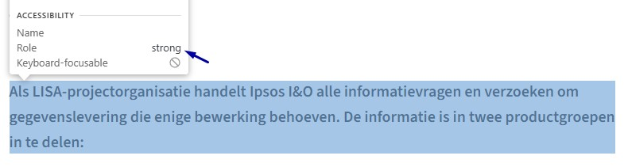
Op deze pagina wordt het strong-element gebruikt om tekst visueel op te laten vallen, terwijl de inhoud zelf geen nadruk nodig heeft. Zie "Als LISA-projectorganisatie … in te delen:".
Het strong-element betekent "belangrijk" en het em-element betekent "nadruk in spraak". Schermlezers veranderen vaak van toon bij deze elementen. Als ze gebruikt worden voor styling in plaats van betekenis, dan krijgen willekeurige woorden de nadruk en raakt de betekenis vertekend.
User story
Ik luister een pagina met een schermlezer. Ik wil dat alleen woorden die echt belangrijk zijn benadrukt worden. Anders krijgen willekeurige woorden de nadruk en raakt de betekenis vertekend.
Hoe te testen
Inspecteer de vetgedrukte tekst met de browser-inspector.
Oplossing
Gebruik strong en em alleen als een woord of zinsdeel echt belangrijk is, en door spraaksoftware benadrukt moet worden. Wil je tekst alleen visueel laten opvallen? Gebruik dan CSS, bijvoorbeeld met een eigen class-attribuut en font-weight: bold of font-style: italic.
De kolomkop "Tarief" bovenin de tabel "Tarieven voor informatie over vestigingen" is opgemaakt met een h4-element. Dit is een kolomkop en dient daarom opgemaakt te worden met een th-element. Daarnaast mist de eerste kolom nog een kolomkop, maak deze ook op met het th-element en zorg voor een koptekst die de eerste kolom beschrijft. Zie ook "Aantal cellen", "NAW", "Telefoon, toegevoegde waarde/productie" en andere tabellen op deze pagina.
User story
Ik lees de website met een schermlezer. Als ik door een tabel navigeer, hoor ik alleen losse getallen en tekst zonder context. Ik verwacht dat mijn schermlezer voor elke cel de bijbehorende kolomkop aankondigt.
Hoe te testen
Inspecteer de tabel met de browser-inspector en controleer of de kolomkoppen in <th>-elementen staan, of luister de structuur met een schermlezer.
Oplossing
Verwijder het h4-element en verander het td-element naar een th-element.
#24 - Visueel meerdere alinea's, in de HTML maar één
Impact: MediumType: ContentWCAG: 1.3.1EN: 9.1.3.1
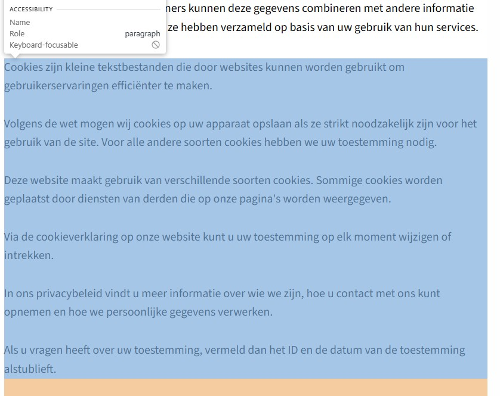
Op deze pagina staat onder de kop "Cookieverklaring" een tekstblok "Cookies zijn kleine tekstbestanden … toestemming alstublieft." dat visueel uit meerdere alinea's bestaat, maar dat ten onrechte als één <p>-element is gemarkeerd. De visuele structuur van de inhoud moet ook in de HTML zichtbaar zijn.
User story
Ik lees de website met een schermlezer. Als ik door de tekst navigeer, worden alle alinea's als één lang blok voorgelezen. Ik verwacht dat ik elke visuele alinea apart kan bereiken.
Hoe te testen
Inspecteer de structuur van de inhoud en controleer of visueel gescheiden alinea's als aparte <p>-elementen zijn gemarkeerd. Navigeer met een schermlezer per alinea door de inhoud (bijvoorbeeld met de P-toets in NVDA). Bevestig dat elke visueel onderscheiden alinea als aparte alinea wordt aangekondigd en los kan worden bereikt.
Oplossing
Als de inhoud visueel uit meerdere alinea's bestaat, sluit dan elke alinea in een eigen <p>-element. Zo wordt de semantische structuur van de inhoud overgebracht aan hulpsoftware.
#25 - Koppen zijn niet als kop gemarkeerd
Impact: MediumType: ContentWCAG: 1.3.1EN: 9.1.3.1
Boven elke tabel op deze pagina worden koppen gebruikt die niet als kop zijn gemarkeerd. Zie "Noodzakelijk (14)", "Statistieken (2)" en "Niet geclassificeerd (4)". Daardoor wijkt de visuele informatiestructuur af van de structuur in de HTML.
User story
Ik lees de website met een schermlezer. Als ik via koppen door de pagina navigeer, mis ik visuele koppen omdat mijn schermlezer ze niet als kop herkent. Ik verwacht dat elke visuele kop ook als kop wordt aangekondigd door mijn schermlezer.
Hoe te testen
Gebruik de HeadingsMap-extensie in de browser om de koppen op de pagina te controleren.
Oplossing
Vervang de p-elementen door h1- tot en met h6-elementen op het passende niveau.
#26 - Structuur van PDF-document is niet in codes vastgelegd
Impact: MediumType: ContentWCAG: 1.3.1EN: 9.1.3.1
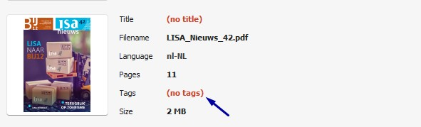
Dit PDF-document mist codes, waardoor de inhoud niet toegankelijk is voor schermlezers. Door het ontbreken van deze codes kan geen volledige toegankelijkheidsbeoordeling worden uitgevoerd, omdat alle succescriteria die te maken hebben met de onderliggende codelaag van de PDF (bijvoorbeeld semantische koppen en alternatieve teksten voor afbeeldingen) niet beoordeeld kunnen worden. Het oplossen van dit probleem kan dus nieuwe toegankelijkheidsproblemen aan het licht brengen.
User story
Ik lees de website met een schermlezer. Als ik een PDF open, herkent mijn schermlezer geen koppen of structuur in het document. Ik verwacht dat een PDF gestructureerd is, zodat ik de inhoud kan begrijpen.
Hoe te testen
Open de PDF in de PAC Accessibility Checker. Als de PDF geen codes heeft, dan staat er "(no tags)" in de kolom Tags.
Oplossing
Voeg codes toe aan het document die de structuur weergeven.
#27 - PDF-document heeft geen titel
Impact: MediumType: ContentWCAG: 2.4.2EN: 9.2.4.2
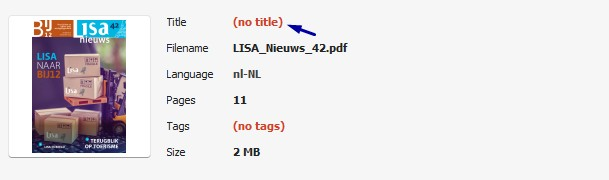
In de bestandseigenschappen van dit PDF-document is geen titel ingesteld. PDF-documenten moeten een titel hebben die het doel of de inhoud duidelijk beschrijft. Die titel moet ook in de titelbalk worden weergegeven in plaats van de bestandsnaam. Zo kunnen bezoekers, en zeker bezoekers met een beperking, snel zien waar het document over gaat.
User story
Ik lees de website met een schermlezer. Als ik een PDF open, hoor ik alleen een betekenisloze bestandsnaam zoals 'document123.pdf'. Ik verwacht dat de schermlezer een duidelijke documenttitel voorleest, zodat ik weet wat ik open.
Hoe te testen
Open de PDF in een browsertabblad → klik op de drie puntjes (More actions) → Document properties → zoek "Title:".
Oplossing
Voeg een beschrijvende titel toe aan de bestandseigenschappen van de PDF.
#28 - Kleurcontrast van grote tekst is te laag
Impact: MediumType: ContentWCAG: 1.4.3EN: 9.1.4.3
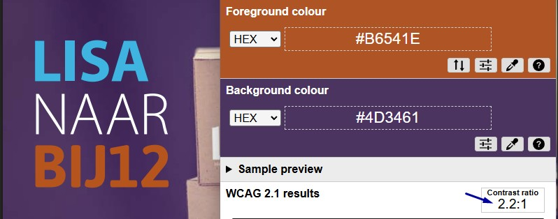
In dit PDF-document staat oranje (#B6541E) tekst "BIJ12" op een paarse (#4D3461) achtergrond. De contrastverhouding is te laag: 2,2:1. Het contrast moet minimaal 3,0:1 zijn voor grote tekst.
User story
Ik ben slechtziend. Als ik grote tekst in een PDF lees, is het contrast te laag om hem duidelijk te kunnen lezen. Ik verwacht dat grote koppen en titels duidelijk afsteken tegen de achtergrond.
Hoe te testen
Meet handmatig met de Colour Contrast Analyser. Je kunt ook de PAC Accessibility Checker gebruiken om het contrast in de PDF te controleren, maar dan moet het document wel getagd zijn.
Oplossing
Pas de tekstkleur of de achtergrondkleur aan zodat de contrastverhouding minimaal 3,0:1 is.
#29 - Kleurcontrast van kleine tekst is te laag
Impact: MediumType: ContentWCAG: 1.4.3EN: 9.1.4.3
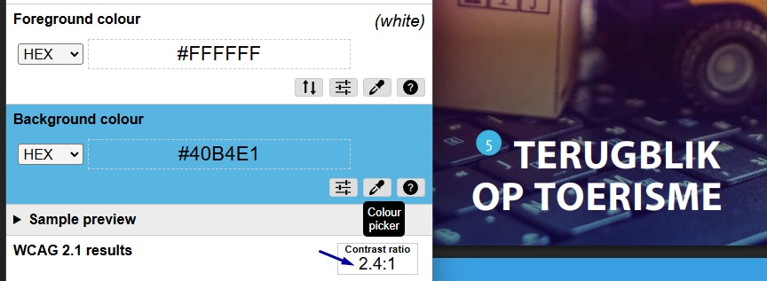
In dit PDF-document staan witte teksten "5", "8", "De stichting LISA … bijbehorende werkgelegenheid." en andere op een blauwe (#40B4E1) achtergrond. De contrastverhouding is te laag: 2,4:1. Zorg dat het contrast minimaal 4,5:1 is.
Hetzelfde probleem komt voor:
op pagina 4 staat witte tekst op een gradient-achtergrond. De maximale contrastverhouding is te laag: 4,4:1.
op pagina's 5, 6, 10 en andere staan lichtblauwe (#63C9E9) teksten "Herstel na coronacrisis of long-COVID?", "Zuidelijke provincies blijven achter", "Branches horeca reageren verschillend op coronamaatregelen" en andere op een witte achtergrond. De contrastverhouding is te laag: 1,9:1.
User story
Ik ben slechtziend. Als ik tekst in deze PDF lees, is de tekst te licht en moeilijk leesbaar. Ik verwacht dat tekst donker genoeg is om hem duidelijk te kunnen lezen.
Hoe te testen
Meet handmatig met de Colour Contrast Analyser. Het minimum is 4,5:1 voor normale tekst en 3,0:1 voor grote tekst (≥ 24 px normaal of ≥ 18,7 px vet). Je kunt ook de PAC Accessibility Checker gebruiken, maar dan moet het document wel getagd zijn.
Oplossing
Pas de tekstkleur of de achtergrondkleur aan zodat de contrastverhouding minimaal 4,5:1 is.
In de bestandseigenschappen van dit PDF-document is geen titel ingesteld. PDF-documenten moeten een titel hebben die het doel of de inhoud duidelijk beschrijft. Die titel moet ook in de titelbalk worden weergegeven in plaats van de bestandsnaam.
User story
Ik lees de website met een schermlezer. Als ik een PDF open, hoor ik alleen een betekenisloze bestandsnaam zoals 'document123.pdf'. Ik verwacht dat de schermlezer een duidelijke documenttitel voorleest, zodat ik weet wat ik open.
Hoe te testen
Open de PDF in een browsertabblad → klik op de drie puntjes (More actions) → Document properties → zoek "Title:".
Oplossing
Voeg een beschrijvende titel toe aan de bestandseigenschappen van de PDF.
#31 - Tabelkoppen zijn niet gemarkeerd
Impact: MediumType: ContentWCAG: 1.3.1EN: 9.1.3.1
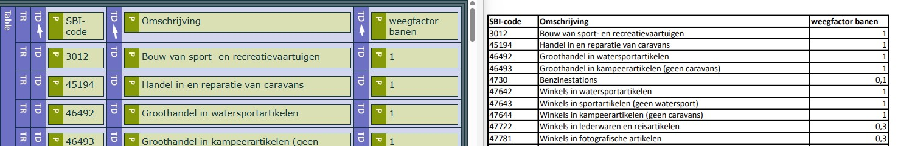
In dit PDF-document staat op pagina 1 een tabel die een gegevenstabel is. De juiste mark-up ontbreekt.
De gegevenstabel heeft speciale tags nodig om de schermlezer te laten weten dat er een tabelkop aanwezig is en dat deze tabelkop een relatie heeft met de onderliggende gegevenscellen.
User story
Ik lees de website met een schermlezer. Als ik door een tabel navigeer, hoor ik niet bij welke kolom elke waarde hoort. Ik verwacht dat mijn schermlezer voor elke gegevenscel de kolomkop aankondigt.
Hoe te testen
Open de PDF in de PAC Accessibility Checker → klik op de knop met een oog (Screen reader preview) → controleer of de tabelkoppen in th-tags staan.
Oplossing
Markeer de cellen in de kop-rij van de tabel met th-tags en de gegevenscellen met td-tags.
Over dit onderzoek
Leeswijzer
Onze rapporten zijn anders. Bij het bespreken van de gevonden problemen volgen wij niet de structuur van de norm, maar die van jouw website of app. Hierdoor kun je gewoon per pagina of scherm aan de slag gaan. Wel zo makkelijk! Je vindt verderop een overzicht van alle pagina’s met problemen.
We geven je bij elk gevonden issue een paar voorbeelden, maar niet een complete lijst. Controleer zelf of het probleem ook nog op andere plekken voorkomt. Zie het rapport als een leidraad.
Gebruikte norm
Dit onderzoek laat zien in hoeverre de website op dit moment voldoet aan WCAG 2.2, niveau A en AA. WCAG staat voor Web Content Accessibility Guidelines. Dit is de internationale norm voor digitale toegankelijkheid. De Europese norm EN 301 549 bevat alle eisen van WCAG op niveau A en AA.
In dit rapport hebben we korte beschrijvingen van de succescriteria uit de norm opgenomen, met een algemene uitleg erbij. Wil je ze helemaal lezen? Bekijk dan de documentatie van WCAG.
Gebruikte onderzoeksmethode
We gebruiken de onderzoeksmethode WCAG-EM van het W3C. Het proces ziet er als volgt uit:
vaststellen wat binnen en buiten scope valt
vaststellen welke technologieën zijn gebruikt
steekproef (sample) samenstellen
steekproef onderzoeken
gevonden issues beschrijven
Het grootste deel van het onderzoek doen we met de hand. Voor een deel van de toegankelijkheidseisen gebruiken we automatische tools als ondersteuning, zoals axe-core en Chrome Developer Tools.
Belangrijk om te weten
Dit rapport helpt je om de toegankelijkheid van je website te verbeteren. Maar let op: het is geen definitieve, volledige lijst van alle aanwezige toegankelijkheidsproblemen. Dat zit zo:
Het is een steekproef
Ten eerste is het onderzoek gebaseerd op een steekproef. Die is op een betrouwbare manier genomen, en de meeste problemen zullen daardoor zeker aan het licht komen. Toch kan een probleem net buiten de steekproef vallen. Bij een volgend onderzoek kan het wel ontdekt worden.
Op basis van falsificatie
We beoordelen vanuit het principe van falsificatie. Dat houdt in dat we proberen te bewijzen dat iets niet waar is, in plaats van te bevestigen dat het klopt. ‘Voldoet’ betekent daarom dat we geen reden hebben gevonden om een punt af te keuren. Maar als we later wél een reden vinden, kan het alsnog worden afgekeurd.
Voortschrijdend inzicht
Het komt voor dat de beoordeling van een succescriterium op detailniveau verandert. De norm beschrijft namelijk niet élk mogelijk scenario. Samen met andere onderzoeksbureaus overleggen we hoe we met bepaalde situaties omgaan. Zo kan iets dat nu wordt afgekeurd, soms bij een volgend onderzoek worden goedgekeurd en andersom.
Oplossen leidt tot nieuw probleem
Ten slotte kan het gebeuren dat bij het oplossen van een probleem onbedoeld een nieuw toegankelijkheidsprobleem ontstaat. Dat komt dan bij een volgend onderzoek pas naar voren.
Hoe werkt dit rapport?
Bevindingen bekijken en filteren
Alle gevonden toegankelijkheidsproblemen staan onder Gevonden problemen. Je kunt de bevindingen filteren op:
Impact (Groot, Medium, Klein, Advies) — hoe ernstig is het probleem voor de gebruiker?
Type (Content, Techniek) — moet de inhoud of de techniek worden aangepast?
Status (Open, Opgelost) — welke problemen zijn al verholpen?
Voortgang bijhouden
Je kunt je voortgang op twee manieren bijhouden:
CSV-export — exporteer alle bevindingen als CSV-bestand en laad het in een (online) spreadsheet om met je team samen te werken.
Jira-export — exporteer alle bevindingen als Jira-compatibel CSV-bestand. Importeer het via Jira > Issues > Import issues from CSV. Bevindingen worden aangemaakt als bugs met prioriteit op basis van impact.
Registreer in de browser — activeer deze optie om per bevinding bij te houden of het is opgelost. Je voortgang wordt opgeslagen in je browser. Niemand anders kan je resultaat zien. Let op: de voortgang is gekoppeld aan je browser. Als je een andere browser of een ander apparaat gebruikt, begint de telling opnieuw.
Plan van aanpak — download een geprioriteerd plan van aanpak om de gevonden problemen stap voor stap op te lossen. Dit is beschikbaar bij audits vanaf maart 2026.
Link naar een specifieke bevinding delen
Bij elke bevinding verschijnt een link-icoon wanneer je er met de muis overheen gaat. Klik op dit icoon om de directe link naar die bevinding te kopiëren. Je kunt deze link plakken in een e-mail of chatbericht, bijvoorbeeld om een vraag te stellen aan Proper Access over een specifiek punt.